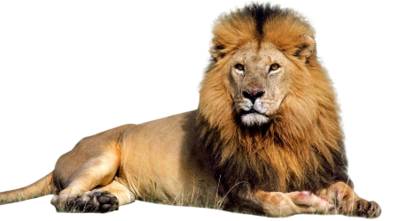
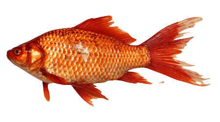
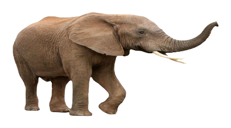
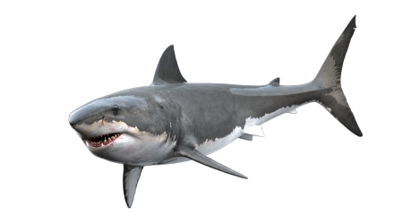
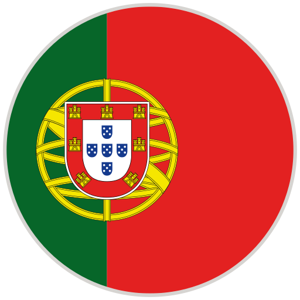
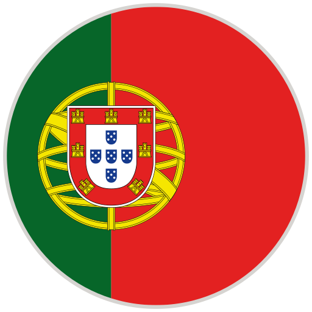

@if (this.tema === 'animales') {




} @else if (this.tema === 'numeros') {
1
2
3
4
5
} @else {
 } @else if (idioma === 'ingles') {
} @else if (idioma === 'ingles') {
 } @else {

}
} @else {

}